Twenty-six works made from real center-pivot fields in open Sentinel-2 imagery. Each one learns a lesson from a reference work (a film, a chart, an instrument, a book) and rebuilds it from farms that exist, with every claim labelled as observed, composed, or not seen.
20 built · 4 partial · 1 inconclusive · 1 not built
Time-based pieces with chapters and a scrubber.
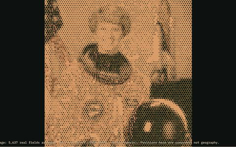
A1builtafter James C. Scott, Seeing Like a State
One East Oweinat field as a place, a count, a portrait dot, and a place again, ending on what the image cannot show.
source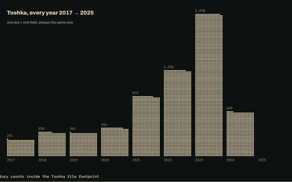
A2builtafter Neil Halloran, The Fallen of World War II
One field learned slowly (about 70 football pitches), carried to Toshka's growth and Africa's deserts.
source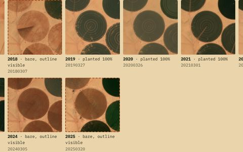
A3builtafter Neil Halloran, Degrees of Uncertainty
A Toshka field built in 2018, planted 2019–2023, bare since: abandoned or fallow? The imagery can't say.
source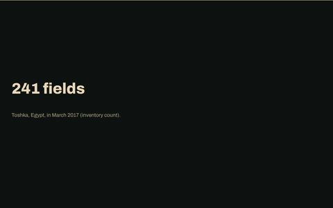
A4builtafter Neil Halloran, The Shadow Peace
A film that stops three times for you to pick a tile, a field and a portrait dot.
source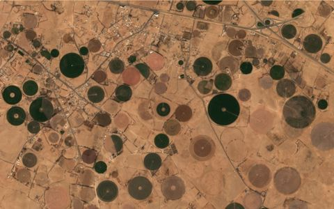
A5builtafter NASA Scientific Visualization Studio, Saudi Arabia's Desert Agriculture
Twelve real months over an Al Jawf farm, true or false color; circles fixed, interiors changing.
source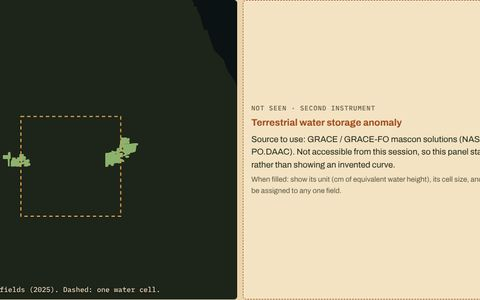
A6partialafter NASA JPL, GRACE and GRACE-FO water storage
Fields at 10 m beside one GRACE-sized water cell; the water panel stays empty and labelled.
source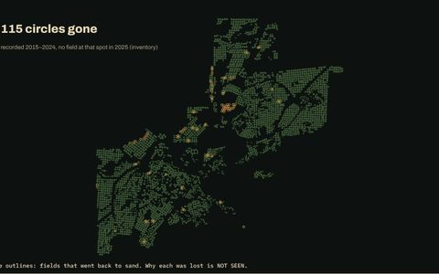
A7builtafter Johnny Kelly and Nexus Studios, Back to the Start
One hub, a farm, a basin, then the turn: 115 recorded fields that went back to sand.
source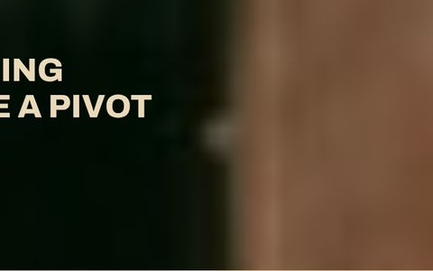
A8builtafter Saul Bass, Anatomy of a Murder titles
Hard cuts: a dark half-disc becomes a planted wedge, a farm, a region.
source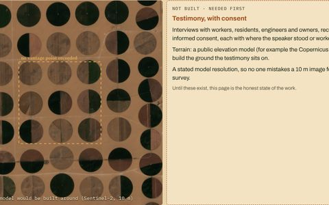
A9not builtafter Forensic Architecture, The Grenfell Tower Fire: Situated Testimonies
Needs real, consented testimony first; the page says so instead of inventing witnesses.
sourceCharts where one mark carries one quantity.
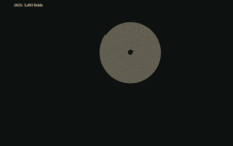
B1builtafter W. E. B. Du Bois and the Atlanta University team, City and Rural Population
241 fields in a straight line beside 3,493 wound into a spiral, which unwinds off the page.
source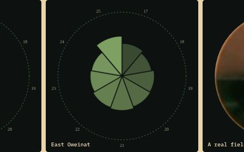
B2builtafter Florence Nightingale, Diagram of the Causes of Mortality
Polar area roses of planted area each March, beside a field that already draws one.
source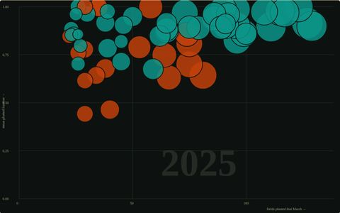
B3builtafter Gapminder and Hans Rosling, World Health Chart
62 farm districts moving through fixed axes, 2017–2025; follow one bubble.
source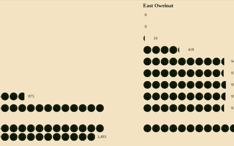
B4builtafter Otto and Marie Neurath, Gerd Arntz: Isotype
One real field image = 100 fields, Toshka and East Oweinat, 1980–2025.
source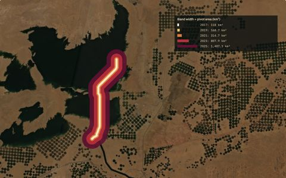
B5partialafter Charles Joseph Minard, the Russian campaign map
A band along the traced canal, its width the pivot area served each year; lake level not available.
source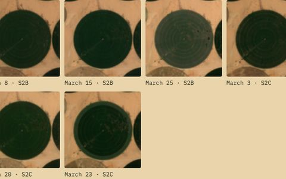
B6inconclusiveafter Étienne-Jules Marey, graphical train timetable
Mark the arm on nine dates and build the timetable yourself; the line looks fixed at 10 m.
source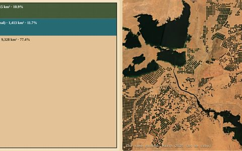
B7builtafter Our World in Data, Half of the world's habitable land is used for agriculture
The Toshka tile divided: pivots 10.9%, water 11.7%, everything else.
source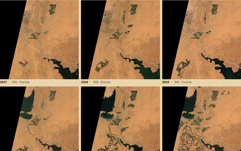
B8builtafter USGS Earthshots, Wadi As-Sirhan Basin
Nine Marches of Toshka at identical crop, scale and rendering.
source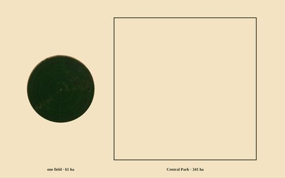
B9builtafter Jan Diehm and Amber Thomas, Women's Pockets Are Inferior
One field at the same scale as Central Park, London, or an area you type in.
source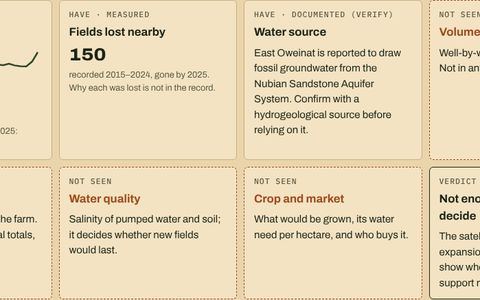
B10partialafter Edward Tufte, cholera map and Challenger charts
Should a farm add 20 fields? What the record shows, and the unknowns just as plainly.
source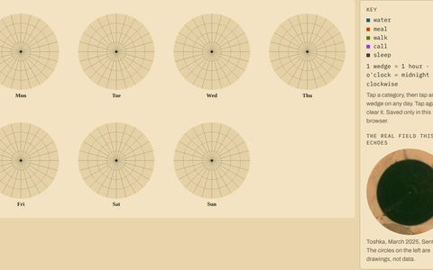
B11builtafter Giorgia Lupi and Stefanie Posavec, Dear Data
Log your own week and see it drawn as seven pivots, with a key.
sourcePieces you explore by hand.
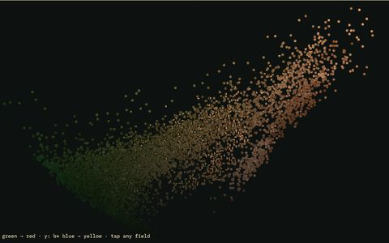
C1builtafter Jonathan Harris and Sep Kamvar, We Feel Fine
A cloud of 7,207 real fields; any dot opens into its farm and closes back.
source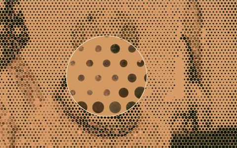
C2builtafter Georges Seurat, A Sunday on La Grande Jatte
A portrait of real fields with a lens that shows each dot's farm and coordinates.
source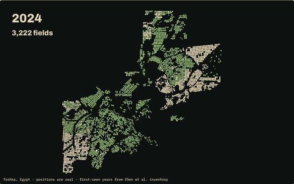
C3builtafter The Washington Post, 100,000 Deaths
Toshka's fields arriving at their true positions, year by year.
sourceThree short studies of how counting reshapes what is counted.
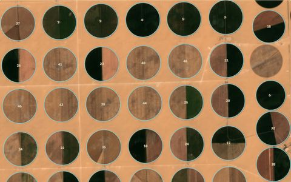
D1builtafter James C. Scott, scientific forestry in Seeing Like a State
One fixed frame of a farm; four passes change only what is counted.
source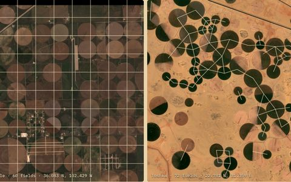
D2builtafter James C. Scott, the survey grid in Seeing Like a State
Texas pivots in survey-grid squares beside Toshka's lattice, same scale.
source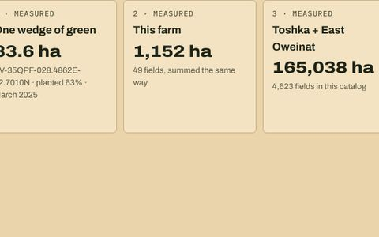
D3partialafter James C. Scott, Against the Grain (the ration tablet)
From one wedge of green to 165,038 ha; tonnes and the national figure left empty.
sourceEach work opens as a claude.ai page; they are private to their owner until shared. "source" links to the work's folder in this repository (fragment, built page and its SCION instruction). Imagery contains modified Copernicus Sentinel data; field counts by year from Chen et al., Africa hyper-arid CPIS 1972–2025 (CC BY 4.0).